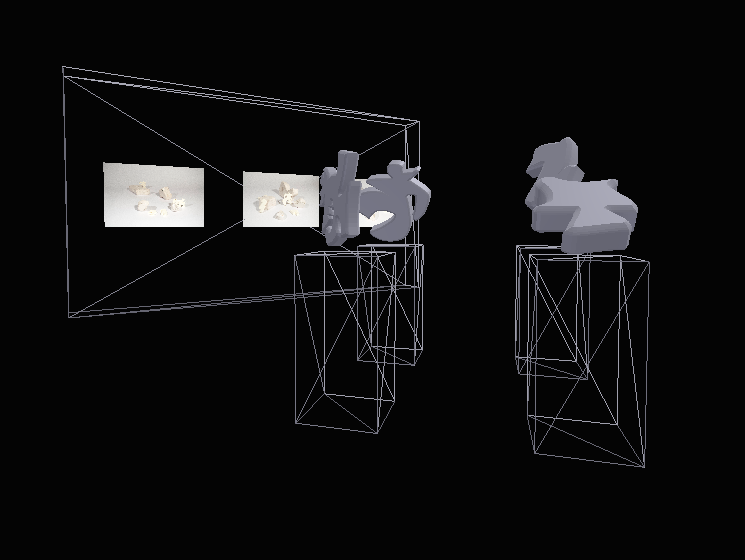

The introduction of digital realities (in this case, specifically focussing on the internet) into day to day life has significantly altered our methods for interfacing with the world we live in. Graphic design can, and has in the past, functioned to bridge the gap between the digital and physical world. However, a problem arises when digital spaces are modeled based on parameters informed by our physical realities. The essence of a concept, as it should exist in digital space, is lost in the limitations of the laws that govern physical space. We project the need for physical clarity onto the experience. It is an exercise of control but also one of insecurity.
